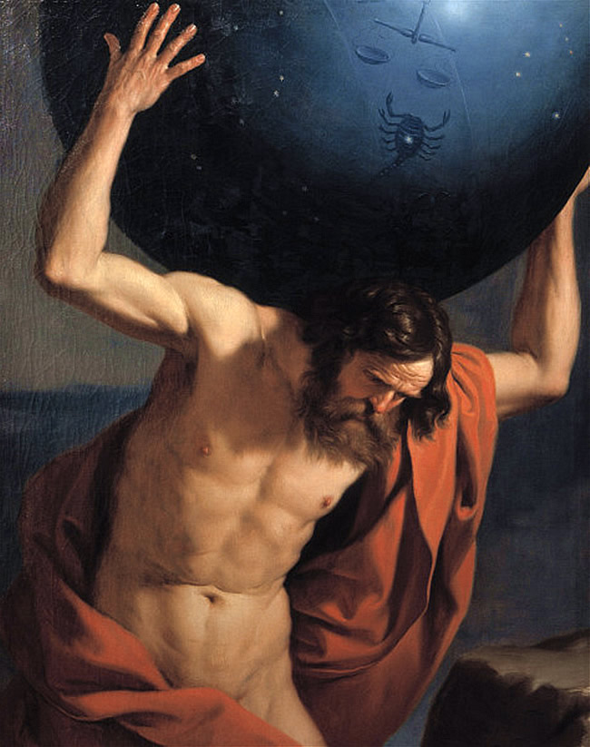

MoT London · The unseen cost of quality · Nov 2026
New tools, shifting burdens and learning to keep up.

The full deck with speaker notes. Tap or swipe to move; the Notes button shows what I said.
Where to start, then the further reading grouped so the pieces that disagree sit side by side.
Every slide on one page each, for printing or sharing.
The experiments from the talk as tools you can pick up and try.
Not finding success isn't failure; it's data. Get a pad, and make sure the next Atlas has one too.